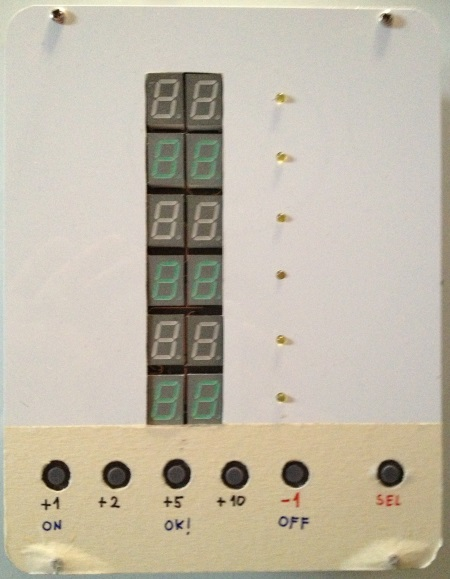

Since I'm a big fan of
Carcassonne board game and I happen to come accross this
unique project on the web, I just
had to make one for myself :). It proved to be great for Carcassonne scoring, but just recently we started using it to track scores in
Qwirkle board game.
Here are some (more on
my blog) pictures of how my version of the electronic carcassonne counter looks like, and how the app looks like on iphone


The idea for a web app came naturally since the electronic counter was too cumbersome to carry around. Now, since this project was done while I was learning (still am)
Angular.js, there is still a lot space for improvement (especially code structure and logic), that's why I encourage you to give suggestions on best (better) Angular practices, or even help out on
GitHub.
Until then try out the application and give me your thoughts about it. Btw, the code on
GitHub is free to use, I didn't put any restrictions on it so feel free to fork it, improve it, alter it to suit your needs.
The icons are from
The IconFactory, and the font is
Lindsay Becker
Oh and,
I would love to hear which game you used it to track scores for, so feel free to leave a comment on my blog. You can read about the dev process in more detail on
my blog.